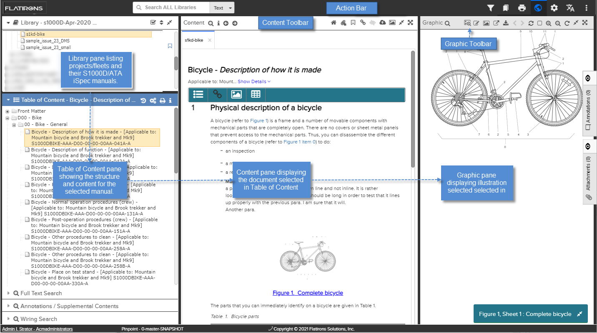

The user interface consists of several panes that are all available from the main page.
Note: The available features in the UI are determined by permission settings. If you see
a described feature you need that you do not have access to, you can request updated
permissions from your administrator. Administrators, refer to the topic "Manage
Permissions for Pinpoint Viewer" in the Flatirons Access Control Module
User Guide for the permissions that can be assigned for the application.
If you are a Pinpoint Standalone Light user, your
administrator is not able to grant additional permissions.
Note: Some panes (such as Wiring Search and FRMFIM
Search) are only visible when an applicable publication type is
selected in the Library.
The illustration below gives you a quick overview of the main features and how to navigate and view content in the application. The functions/buttons in the user interface may vary depending on the publication and the builder it is generated with.

User Interface (Standalone Light)
The table that follows describes the main components in the user interface:
| Component | Description |
|---|---|
| Action Bar | The black top bar contains a set of functions that are useful
while navigating and reading publications, such as filtering,
search and print. You can also access the user interfaces for
the Data Manager and the Access Control Manager. These entries are described in the Action Bar Components. Note: You cannot access Data Manager or Access Control from Pinpoint Standalone Light.
|
| Library | The Library pane is located in the top left corner of the user interface. It contains the projects that are available in the application. For details, refer to Library Pane. |
| Table of Content | The Table of Content pane is located below the Library pane. It displays the structure of the publication selected in the Library. For details, refer to Table of Content Pane. |
| Full Text Search | The Full Text Search pane is default minimized and is located below the Table of Content. When selected, it is maximized. Depending on the data type, this pane allows you to search for specific text, part numbers, or FINs. For details, refer to Full Text Search Pane. |
| Annotations / Supplemental Contents |
The Annotations / Supplemental Contents search pane is located below the Full Text Search. This pane allows you to search for annotations or attachments. For details, refer to Annotations / Supplemental Content Search Pane. |
| FRMFIM Search | The FRMFIM Search pane is available when you open a FRMFIM publication in the Library pane. For details, refer to FRMFIM Search Pane. |
| Wiring Search | The Wiring Search pane is available when you open a supported wiring publication in the Library. For details, refer to Wiring Search Pane. |
| TSM Search | The TSM Search pane is available when you open a Troubleshooting publication in the Library. For details, refer to TSM Search. |
| Content | The Content pane in the middle displays the document selected in the Table of Content. For details, refer to Content Pane. |
| Graphic | The Graphic pane on the right side shows illustrations selected in the Content pane. A set of functions are available in tool bar. For details, refer to Graphics Pane. |
| Bottom bar | The bottom bar shows the following information:
|